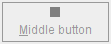

Answers: Performing Custom Painting
Questions
Question 1. What method defined by JComponent
paints the inside of a component?
Answer 1: The paintComponent
method paints a component's innards (with the exception of any children it
contains).
Question 2. Which of the following code snippets paint a rectangle (filled or not) that is 100x100 pixels?
a. g.fillRect(x, y, 100, 100)
b. g.fillRect(x, y, 99, 99)
c. g.drawRect(x, y, 100, 100)
d. b and c
e. a and c
Answer 2: a.
The drawRect methods paint lines just below
the specified rectangle. So to get a 100x100 rectangle, you need to specify
a width and height of 99, 99 to drawRect. For fillXxx
methods, on the other hand, you specify exactly the desired width and height,
so g.fillRect(x, y, 100, 100) results in a 100x100 rectangle.
Question 3. What code would you use to make
a component perform the next painting operation using the background color
at 50% transparency?
Answer 3:
g2d.setComposite(AlphaComposite.getInstance(AlphaComposite.SRC_OVER, 0.5f));
Exercises
Exercise 1. Using a standard border and custom
component painting, implement a component that has a preferred size of 250x100,
is opaque by default, has a 5-pixel black border, and paints an “X”
(using 5-pixel-thick lines) in the foreground color, as shown in the following
figure.

Answer 1: See XMarksTheSpot.java,
which you can run using ComponentDisplayer.java.
Here's the code that sets the border of the XMarksTheSpot component:
setBorder(BorderFactory.createMatteBorder(5,5,5,5, Color.BLACK));
Here's the X-drawing code from the paintComponent method of XMarksTheSpot:
Graphics2D g2 = (Graphics2D)g;
Insets insets = getInsets();
g2.setStroke(new BasicStroke(5.0f));
g2.draw(new Line2D.Double(insets.left,
insets.top,
getWidth() - insets.right,
getHeight() - insets.bottom));
g2.draw(new Line2D.Double(insets.left,
getHeight() - insets.bottom,
getWidth() - insets.right,
insets.top));
Exercise 2. Implement an icon that’s 10x10
pixels and paints a solid rectangle that fills the 10x10 area. If the icon’s
component is enabled, the rectangle should be red; if disabled, gray. Make
a copy of ButtonDemo.java that uses your custom Icon
for the middle button, instead of displaying middle.gif. The
following pictures show what the icon should look like.
| |
 |
Answer 2: See SquareIcon.java,
which you can run using this modified ButtonDemo.java.
Here's the code that sets the icon:
Icon middleButtonIcon = new SquareIcon();
...
b2 = new JButton("Middle button", middleButtonIcon);
Here is SquareIcon's implementation of the three methods required
by the Icon
interface:
public void paintIcon(Component c, Graphics g,
int x, int y) {
if (c.isEnabled()) {
g.setColor(Color.RED);
} else {
g.setColor(Color.GRAY);
}
g.fillRect(x, y, SIZE, SIZE);
}
public int getIconWidth() {
return SIZE;
}
public int getIconHeight() {
return SIZE;
}
Exercise 3. Implement a border that paints a
red 15-pixel-tall stripe all the way across the top of its component. Test
this border by substituting it for the border on the component you created
in exercise 1. The result should look like the following figure.
 Answer 3: See
Answer 3: See StripeBorder.java,
which you can run using ComponentDisplayer.java
and XMarksTheSpot.java (be sure
to uncomment the line that sets the border to StripeBorder). Here
is StripeBorder's implementation of the three methods required
by the Border
interface:
public void paintBorder(Component c, Graphics g,
int x, int y,
int width, int height) {
g.setColor(Color.RED);
g.fillRect(x, y, c.getWidth(), HEIGHT);
}
public Insets getBorderInsets(Component c) {
return new Insets(HEIGHT, 0, 0, 0);
}
public boolean isBorderOpaque() {
return true;
}